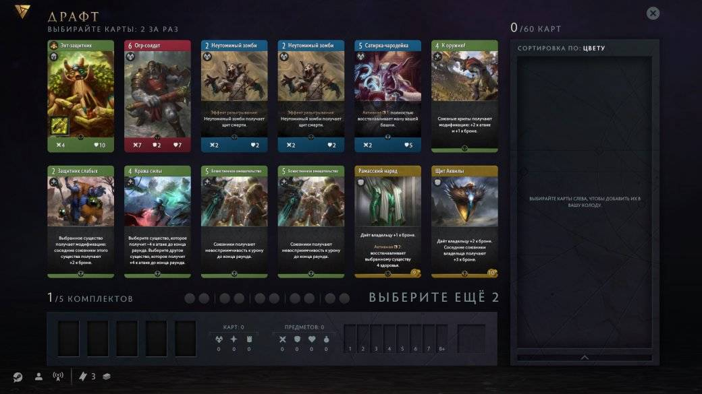
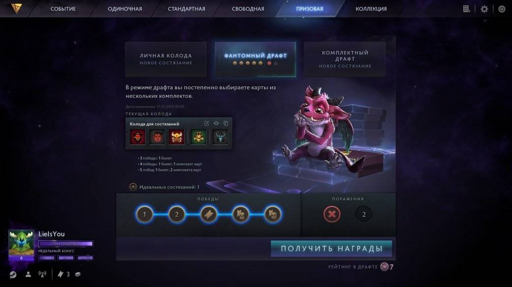
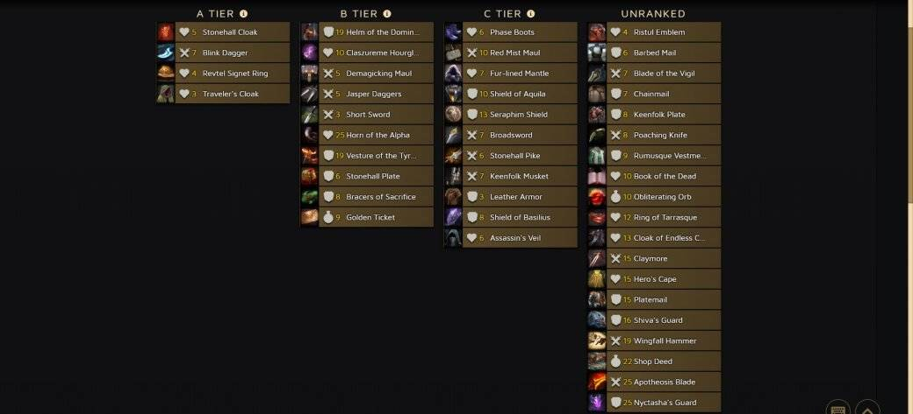

Драфт — это единственный режим в Artifact: The Dota Card Game, за победу в котором можно получить награду. Но чтобы выиграть 4-5 матчей и получить призы, нужно для начала собрать себе колоду.
Самым оптимальным выбором для новичка будет «Фантомный драфт». В «Личном драфте» вам придется играть собственной колодой. Если вы не вложили деньги в Artifact, то скорее всего вы будете сильно уступать тем, кто это сделал. «Комплектный драфт» потребует от вас приличной входной платы в виде 5 наборов и 2 билетов. Именно поэтому наиболее удобным драфтом является «Фантомный драфт» — все в равных условиях и цена за вход составляет всего один билет.
Как происходит набор карт?
Создание колоды в «Фантомном драфте» чем-то напоминает арену в HS или Gwent. Вам придется составить колоду из 5 наборов, взяв из каждого по 12 карт. Изначально у вас на выбор 12 карт — из них вам нужно выбрать 2. Дальше количество карт будет сокращаться, но вам всегда нужно будет брать по 2 карты. Как только вы выберете две последние карты, все начнется сначала. И так все 5 наборов.
В одном комплекте можно взять только одного героя, но выпадают они чаще, так что необязательно хватать первого попавшегося.
Каких героев выбирать?
Победитель первого турнира по Artifact создал классификацию для героев в драфте.
- «S» (лучший разряд) — этих персонажей стоит брать в любой ситуации.
- «F» (худшая группа) — выбирать кого-то отсюда противопоказано.
Не стоит в «Фантомном драфте» рассчитывать собрать «моноколоду» (из одного цвета). Игра не смотрит на ваш выбор и подкидывает вам совершенно разных героев и карты. Вы можете взять почти все черные карты, а героев вам подсовывать будут зеленых и синих.
Первые 2-3 пака просто ориентируйтесь на появляющиеся сильные карты, забирая их, какого бы цвета они не были. А уже в 4-5 наборе подбирайте карты под сформировавшуюся стратегию.
Особенность этого режима — возможность добавлять в колоду дубли героев. У вас может быть неограниченное количество карт одного и того же героя или обычных карт.
Базовые герои
Не расстраивайтесь, если кто-то из полученных героев вам откровенно не подходит. Вы сможете заменить его одним из базовых героев: Киф Могучий (красная), ДжуʼМой (синяя), Дебби (черная), Фарван (зеленая). В любой непонятной ситуации советую добирать Дебби, если вас не устраивают полученные вами герои. Дебби за счет бонуса +2 по героям убивает практически всех 1 на 1. Помимо этого она добавляет в нашу колоду полезную карту «Неслучайность», которая наносит 3 единицы урона.
Более «простые» колоды (черные и красные) оказываются намного эффективнее сложных синих стратегий, рассчитанных на «лейт».
Карты, на которые стоит обратить внимание
Помимо героев, конечно, большое внимание стоит отдать и обычным картам, которые вы собираете. Тут тоже не всегда стоит обращать внимание на цвет, а прежде всего на качество карты. Есть ряд карт, которые на порядок сильнее и эффективнее других, шанс их выпадения невелик, но если вам повезло, то хватайте их тут же.
К таким картам можно отнести: Туман Аверно, Стадо Громозавров, Пора свершений, Бушующее пламя, Истребление, Под покровом ночи и др. Распределение карт по группам «полезности» можете посмотреть здесь.
Предметы
Не выбирайте дорогие предметы или предметы, прибавляющие броню. Ориентируйтесь на дешевые и эффективные карты, дающие небольшой прирост здоровья или урона, благодаря им можно со старта нарастить преимущество.
Топ-5 предметов для драфта:
- Плащ Путника (+4 хп)
- Короткий Меч (+2 урона)
- Кинжал Скачка (+2 урона и возможность переместиться на другую линию)
- Песочные часы Класзурема (+4 хп и все карты которые берет противник получают +1 к замку)
- Крушитель Колдовства (+2 урона, уничтожает вражеские модификаторы).
Помните, вы можете немного изменить колоду в драфте в любой момент.
Для того, чтобы отбить потраченный билет, нужно одержать три победы. За 4 выигранных партии нам дадут билет и набор. Максимальная награда (за 5 побед) — 2 набора и 1 билет.